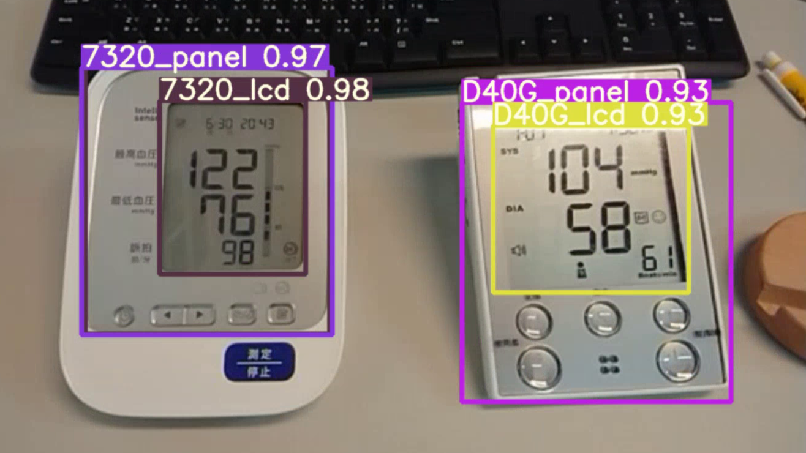

Deinterleaving & Classification of Radar Signals
Designed a neural network to classify and deinterleave complex mixed radar signals using novel encoding techniques.
Kaggle Silver: Blindness Detection
Top 1% solution for detecting diabetic retinopathy using EfficientNet and advanced data augmentation.

Sphygmomanometer Digit Recognition
Mobile app and server integration for reading blood pressure monitors using computer vision.